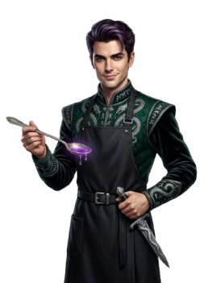

O Caldeirão de Prata

Magnus Riddle
"Herdeiro de uma linhagem complexa, Magnus encontrou sua verdadeira vocação não no poder, mas na transformação. Considerado um dos maiores alquimistas gastronômicos da atualidade, ele utiliza técnicas ancestrais de preparo de poções para extrair sabores que desafiam a lógica trouxa e bruxa. Para Magnus, cozinhar é a forma mais pura de magia: aquela que nutre a alma e altera os sentidos."
Ler mais...O Caldeirão de Prata
"Nascido do desejo de criar um santuário para o paladar, o Caldeirão de Prata não é apenas um restaurante, mas um marco na história da culinária bruxa. Localizado sob as fundações de um antigo observatório astronômico, o estabelecimento utiliza o metal que lhe dá nome para garantir a pureza absoluta de suas infusões. Aqui, a tradição dos Riddle se reinventa em cada banquete, unindo elegância secular com a inovação das artes mágicas."
Ler mais...Filet ao Sangue de Dragão
Medalhões de filet mignon selados em caldeirão de prata, banhados em um redução de vinho do Porto e especiarias orientais que emitem um leve brilho rubi. Acompanha purê de mandrágora defumada.
Detalhes...Infusão de Sorte Líquida
Uma releitura gastronômica da Felix Felicis. Base de champanhe cristalino com infusão de mel de flores raras e partículas de glitter comestível que giram perpetuamente no copo. Traz uma sensação imediata de euforia.
Detalhes...Esferas de Gryffindor
Trufas de chocolate belga 70% recheadas com caramelo salgado e envoltas em folhas de ouro comestível. Ao serem tocadas pela colher, liberam uma fumaça fria com aroma de baunilha de Madagascar.
Detalhes...